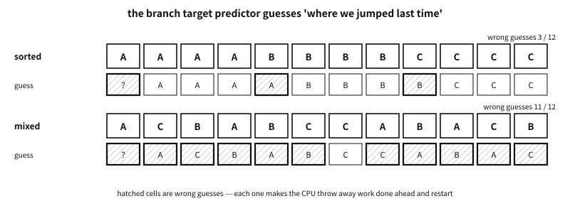

73 The cost of an indirect call — measuring, reducing, guarding
What to know first
Looking back
How much more does a call through a table cost than a direct call? Which is right: “virtual calls are slow” or “on today’s CPUs an indirect call is free”?
A. Both are right under some conditions. On this machine, when objects of the same kind came one after another, a call through a table cost about the same as a direct call; when kinds came mixed it cost four to five times as much. What made the difference was not the table but whether the CPU guesses where it will jump next (branch prediction). This chapter separates those conditions one by one and measures them, then looks at ways to cut the cost and at the cost security mechanisms add.
The need for this chapter, and its context
switch to go faster and get slower, or switch on one security option and watch a frequently run loop slow down several times. Only by knowing the numbers together with the conditions they came from can you choose where to use a table and where to avoid one.By the end of this chapter
The questions this chapter answers
- So is “use a
switchinstead of a table to go faster” wrong?
73.1 What is measured, and how#
- Same work, different choosing. Every object has a kind, and the kind decides which function is called for it — the class of the earlier chapters. There are eight kinds, each with its own function. A function’s body is one multiplication and one addition, small on purpose. What is measured is not the work but the cost of choosing the function.
- No inlining. Every kind’s function carries
[[gnu::noinline]]. Otherwise only theswitchside would have its bodies spread out at the call site (inlining) and even turned into code that handles several objects per instruction (vectorisation), and we would be measuring vectorisation, not choosing. A version that allows inlining has a row of its own. - Same memory, different order. 65,536 objects sit in one array and are always walked from the front. “Sorted” lays the same kinds next to one another; “mixed” shuffles the order of the same objects at random. The order of reading memory is the same, so the difference between the two columns comes from branch prediction.
- Baseline. The time of “one kind, a direct call” is taken as 1. Every cell is a multiple of it.
- Cross-check. The last line checks that every way computed the same sum — if the compiler deletes work, the sums disagree (the same discipline as the measurement in chapter 75). With one kind, sorted and mixed are the same order, so the two columns must agree.
In the two header lines of the output, kinds is the number of kinds (1, 2, 8) and order is the order. Each row is one way of choosing the function — eleven in all.
| Output row | What it does | Section |
|---|---|---|
grouped by kind, direct | keeps an index list per kind and, list by list, calls that kind’s function directly | Second, group objects of the same kind |
switch | a switch on the kind number; each branch calls a function | Third, the shape of the code that chooses |
binary branches | splits the kind number with three comparisons. No table | Third, the shape of the code that chooses |
static const table | calls through a static const table | First, the cost of an indirect call comes from prediction |
table built at run time | calls through a table built at run time in malloc’d memory | First, the cost of an indirect call comes from prediction |
fat pointer | calls through the table side of a fat pointer | First, the cost of an indirect call comes from prediction |
selector, no cache | scans the method lists by selector | Inline caches |
selector, class cache | looks up by selector, trying the per-class cache first | Inline caches |
selector, inline cache | keeps one “last class → function” entry at the call site | Inline caches |
selector, 4-way PIC | keeps four such entries at the call site | Inline caches |
switch, inlining allowed | like switch, but the bodies may be spread out | Third, the shape of the code that chooses |
Table 73.1 — The eleven rows of the measurement output
examples-en/dynamic-vtables/bench/ways.c
/* The ways of choosing a function, timed by harness.c.
- Every kind has its own function (different constants, so they cannot be merged),
and none may be inlined: what is measured is the choosing, not the work.
- The one exception is the last way, which lets the compiler inline. */
#include "bench.h"
#define KIND(k, c) \
[[gnu::noinline]] static uint64_t f##k(const struct obj *o) \
{ return o->x * (c) + (k); } \
static inline uint64_t g##k(const struct obj *o) { return o->x * (c) + (k); }
KIND(0, 3) KIND(1, 5) KIND(2, 7) KIND(3, 11)
KIND(4, 13) KIND(5, 17) KIND(6, 19) KIND(7, 23)
[[gnu::noinline]] uint64_t other(const struct obj *o) { return o->x; }
const method fs[KMAX] = { f0, f1, f2, f3, f4, f5, f6, f7 };
const struct ops static_ops[KMAX] = {
{ f0, other }, { f1, other }, { f2, other }, { f3, other },
{ f4, other }, { f5, other }, { f6, other }, { f7, other },
};
#define EACH for (uint32_t r = 0; r < REPS; r++) for (uint32_t i = 0; i < N; i++)
uint64_t m_direct(void) /* the baseline: one kind, a direct call */
{ uint64_t s = 0; EACH s += f0(&arena[i]); return s; }
uint64_t m_grouped(void) /* grouped by kind (an index list per kind), direct */
{
uint64_t s = 0;
for (uint32_t r = 0; r < REPS; r++)
for (uint32_t k = 0; k < kinds; k++) {
const uint32_t *ix = by_kind[k];
switch (k) {
#define GROUP(j) \
case j: for (uint32_t i = 0; i < count[j]; i++) s += f##j(&arena[ix[i]]); break;
GROUP(0) GROUP(1) GROUP(2) GROUP(3) GROUP(4) GROUP(5) GROUP(6) GROUP(7)
}
}
return s;
}
uint64_t m_switch(void) /* switch on the kind number */
{
uint64_t s = 0;
EACH {
const struct obj *o = &arena[i];
switch (o->kind) {
case 0: s += f0(o); break; case 1: s += f1(o); break;
case 2: s += f2(o); break; case 3: s += f3(o); break;
case 4: s += f4(o); break; case 5: s += f5(o); break;
case 6: s += f6(o); break; case 7: s += f7(o); break;
}
}
return s;
}
uint64_t m_binary(void) /* binary branches on the kind number, no table */
{
uint64_t s = 0;
EACH {
const struct obj *o = &arena[i];
uint32_t k = o->kind;
if (k < 4) s += k < 2 ? (k < 1 ? f0(o) : f1(o)) : (k < 3 ? f2(o) : f3(o));
else s += k < 6 ? (k < 5 ? f4(o) : f5(o)) : (k < 7 ? f6(o) : f7(o));
}
return s;
}
uint64_t m_static(void) /* a static const table */
{ uint64_t s = 0; EACH s += arena[i].sops->apply(&arena[i]); return s; }
uint64_t m_dynamic(void) /* a table built at run time */
{ uint64_t s = 0; EACH s += arena[i].dops->apply(&arena[i]); return s; }
uint64_t m_fat(void) /* a fat pointer */
{ uint64_t s = 0; EACH s += fats[i].ops->apply(fats[i].data); return s; }
/* ---- by selector: what Objective-C does, with and without caches ---- */
/* scan the list, then the parent's */
static method lookup_slow(const struct klass *c, uint32_t sel)
{
for (; c; c = c->parent)
for (uint32_t m = 0; m < c->n; m++)
if (c->methods[m].sel == sel) return c->methods[m].fn;
return nullptr;
}
/* the per-class cache first */
static method lookup_cached(struct klass *c, uint32_t sel)
{
struct cache_entry *e = &c->cache[sel & 15];
if (e->sel == sel) return e->fn;
method m = lookup_slow(c, sel);
*e = (struct cache_entry){ sel, m };
return m;
}
uint64_t m_sel_slow(void) /* by selector, no cache: scan the list to its end */
{ uint64_t s = 0; EACH s += lookup_slow(arena[i].cls, SEL_APPLY)(&arena[i]); return s; }
uint64_t m_sel_cache(void) /* by selector, per-class cache */
{ uint64_t s = 0; EACH s += lookup_cached(arena[i].cls, SEL_APPLY)(&arena[i]); return s; }
uint64_t m_sel_ic(void) /* by selector, one-entry inline cache at the call */
{
uint64_t s = 0;
struct { const struct klass *cls; method fn; } ic = {};
EACH {
struct klass *c = arena[i].cls;
if (c != ic.cls) { ic.cls = c; ic.fn = lookup_slow(c, SEL_APPLY); } /* miss */
s += ic.fn(&arena[i]);
}
return s;
}
uint64_t m_sel_pic(void) /* by selector, a four-entry polymorphic inline cache */
{
uint64_t s = 0;
struct { const struct klass *cls; method fn; } pic[4] = {};
uint32_t next = 0;
EACH {
struct klass *c = arena[i].cls;
method m;
if (pic[0].cls == c) m = pic[0].fn;
else if (pic[1].cls == c) m = pic[1].fn;
else if (pic[2].cls == c) m = pic[2].fn;
else if (pic[3].cls == c) m = pic[3].fn;
else { /* miss: look up, replace one */
m = lookup_slow(c, SEL_APPLY);
pic[next].cls = c;
pic[next].fn = m;
next = (next + 1) & 3;
}
s += m(&arena[i]);
}
return s;
}
uint64_t m_inlined(void) /* switch again, but the bodies may be inlined */
{
uint64_t s = 0;
EACH {
const struct obj *o = &arena[i];
switch (o->kind) {
case 0: s += g0(o); break; case 1: s += g1(o); break;
case 2: s += g2(o); break; case 3: s += g3(o); break;
case 4: s += g4(o); break; case 5: s += g5(o); break;
case 6: s += g6(o); break; case 7: s += g7(o); break;
}
}
return s;
}
Output
== gcc -O2
65536 objects x 8 passes; each cell is a multiple of one direct call
kinds: 1 1 2 2 8 8
order: sorted mixed sorted mixed sorted mixed
grouped by kind, direct 1.04 1.04 1.04 1.25 1.05 1.80
switch 1.44 1.44 1.61 4.11 1.55 6.25
binary branches 1.44 1.43 1.61 3.97 1.23 7.21
static const table 1.00 1.00 1.01 3.19 1.01 4.77
table built at run time 1.00 1.00 1.01 3.20 1.01 4.80
fat pointer 1.20 1.20 1.21 3.20 1.21 4.79
selector, no cache 3.51 3.52 3.50 6.37 3.45 8.58
selector, class cache 1.61 1.61 1.47 4.00 1.42 5.78
selector, inline cache 1.27 1.27 1.19 4.27 1.18 7.65
selector, 4-way PIC 1.14 1.14 1.21 3.97 1.37 9.81
switch, inlining allowed 1.07 1.06 0.98 3.43 0.94 5.14
every way computed the same sum: yes
switch compiled to: a jump table (one indirect jump)
== clang -O2
65536 objects x 8 passes; each cell is a multiple of one direct call
kinds: 1 1 2 2 8 8
order: sorted mixed sorted mixed sorted mixed
grouped by kind, direct 1.15 1.15 1.11 1.33 1.19 1.96
switch 1.55 1.53 1.45 4.06 1.44 6.69
binary branches 1.54 1.54 1.53 4.11 1.54 8.38
static const table 1.15 1.14 1.14 3.46 1.15 5.28
table built at run time 1.08 1.08 1.07 3.43 1.09 5.29
fat pointer 1.25 1.24 1.23 3.40 1.26 5.25
selector, no cache 3.34 3.35 3.36 6.88 3.39 9.80
selector, class cache 1.24 1.23 1.23 3.59 1.27 5.41
selector, inline cache 1.21 1.21 1.21 4.67 1.21 8.07
selector, 4-way PIC 1.07 1.07 1.13 3.64 1.20 11.19
switch, inlining allowed 0.82 0.82 0.83 3.51 0.90 5.47
every way computed the same sum: yes
switch compiled to: a jump table (one indirect jump)
Platform note. The machine and the conditions
-O2. Other work runs on this machine, and at first the same cell moved by two or three times. So short measurements are taken 41 times, the ways taking turns, and the shortest is kept; the baseline is measured again for every condition; and the run is pinned to one CPU. After that, consecutive runs agreed within 1% per cell. When the code’s layout changed (splitting files, editing lines), cells moved by 10–15%. So the text below gives not the second decimal place but the ranges measured several times while writing, and only conclusions that did not flip within those ranges. The output above was measured again when this edition was built, so it may stray a little from those ranges. The machine has no perf, so the number of mispredictions was not counted — that prediction is the cause is shown by “an experiment that changes only the order”.73.2 First, the cost of an indirect call comes from prediction#
Look at the sorted columns first. Even with eight kinds, when the same kind follows the same kind, a call through a static const table took 1.0–1.4 times a direct call. The table built at run time and the fat pointer were within that range too. Here an indirect call is almost free. The CPU does not wait for the target of an indirect call to come out of memory. It remembers where this site jumped last time (branch target prediction), runs ahead there and starts the work, and checks later whether the guess was right.

Figure 73.1 — When the same kind follows the same kind, the guess is wrong only where the kind changes. Mixed, it is wrong almost every time.
In the mixed columns everything changes. With eight kinds mixed, the table took 4.7–5.6 times, switch 6.2–7.4 times and binary branches 7.2–8.7 times. Even with only two kinds, mixing them made the table 3.2–3.5 times — a guess between two is still wrong about half the time. Even the switch with inlined bodies took 5.1–5.9 times on eight mixed kinds — allowing inlining did not remove the cost of mixed kinds. When a guess is wrong, the CPU throws away the work done ahead and starts again from the right place. That cost is paid alike whether the choice goes through a table, jumps from a switch or splits by binary branches.
So the first conclusion is this. Most of the cost of choosing comes not from the shape of the choice but from whether the next kind can be guessed.
73.3 Second, group objects of the same kind#
The surest way to make guesses right is to group the same kinds. The grouped by kind, direct row keeps an index list per kind and, list by list, calls that kind’s function directly. With eight kinds mixed it took about 1.8–2.1 times — under half of a call through a table in the same column (4.7–5.6 times). What remains is not the cost of choosing but the cost of reading objects scattered behind an index (with one kind, too, this row is 1.0–1.2 times).
If the objects can be laid out by kind from the start, even the cost of reading through the index goes — that is the “sorted” column, and chapter 51′s per-kind arrays. Grouping by index is the next best thing when the layout cannot change.
73.4 Third, the shape of the code that chooses#
Differences of shape show when guesses are right.
- A
switchcan cost more than a table. In the columns where guesses are right,switchtook 1.4–1.6 times, more than the table (1.0–1.4 times). Both compilers emitted thisswitchas a jump table (one indirect jump that looks up the address by number) — the output’sswitch compiled toline checks that in the machine code. A function call follows, so there are two branches. A call through a table is one branch. - Once the function bodies are inlined, the
switchcatches up with the table. Theswitch, inlining allowedrow is left with one branch. Under Clang it was faster than every table (0.8–0.9 times); under GCC it was about the same as the table (0.9–1.1 times). - Binary branches did not beat the table. Code that splits eight ways by three comparisons took 1.2–1.7 times in the sorted columns and was the worst in the mixed ones — every fork can be guessed wrong. This is how the SmallEiffel compiler, which we meet in chapter 74, dispatched instead of using tables.
Q. So is “use a switch instead of a table to go faster” wrong?
A. It comes with a condition. When the switch’s branches are inlined — the set of kinds is fixed and the bodies are in the same file — it is often right. If the switch ends up calling an outside function, the jump table plus the call make two branches, and where guesses are right it can cost more than a table. Either way, when kinds are mixed and guesses go wrong, the difference between the two is buried in that cost.
73.5 Devirtualisation — when the compiler removes an indirect call#
Devirtualisation is the optimisation in which the compiler, knowing which table, turns the indirect call into a direct one and may go on to spread the function’s body out at the call site (chapter 71). How narrow its condition is, we see in the machine code.
examples-en/dynamic-vtables/devirt/devirt.c
/* When the compiler knows the table, and when it does not --- the same shape_area,
called from five places. run.sh checks each function's machine code for an
indirect call. */
#include <stdlib.h>
struct shape;
struct shape_ops { double (*area)(const struct shape *); };
struct shape { const struct shape_ops *ops; double r; };
static double circle_area(const struct shape *s) { return 3.0 * s->r * s->r; }
static inline double shape_area(const struct shape *s) { return s->ops->area(s); }
static const struct shape_ops circle_ops = { circle_area }; /* a static const table */
static struct shape_ops quiet_ops = { circle_area }; /* no const, nobody changes it */
struct shape_ops open_ops = { circle_area }; /* visible to other files */
const struct shape_ops *built_ops; /* built at run time */
double known_object(double r) /* object and table both visible here */
{
struct shape s = { &circle_ops, r };
return shape_area(&s);
}
double never_written(double r) /* no const, yet nothing in this file writes it */
{
struct shape s = { &quiet_ops, r };
return shape_area(&s);
}
double visible_outside(double r) /* another file may change it */
{
struct shape s = { &open_ops, r };
return shape_area(&s);
}
double built_at_run_time(double r) /* the table is decided at run time */
{
struct shape s = { built_ops, r };
return shape_area(&s);
}
/* one static const table, but the object comes from outside */
double from_caller(const struct shape *s)
{
return shape_area(s);
}
void build(void)
{
struct shape_ops *t = malloc(sizeof *t);
if (t) { *t = circle_ops; built_ops = t; }
}
Output
== gcc -O2
known_object inlined
never_written indirect
visible_outside indirect
built_at_run_time indirect
from_caller indirect
== clang -O2
known_object inlined
never_written indirect
visible_outside indirect
built_at_run_time indirect
from_caller indirect
The same shape_area was called from five functions. run.sh looks in each function’s machine code for a call through a pointer (call * and the like).
| Function | Table and object | Result |
|---|---|---|
known_object | a static const table; the object is made inside the function | the call vanished and the area computation took its place |
never_written | a static table, no const, nothing in this file writes it | the indirect call stayed |
visible_outside | a table other files can see | the indirect call stayed |
built_at_run_time | a table built at run time in malloc’d memory | the indirect call stayed |
from_caller | only one static const table exists, but the caller passes the object | the indirect call stayed |
Table 73.2 — Five functions calling shape_area, and whether they were devirtualised — both compilers agreed
The call vanished only once: when the static const table and the object made on the spot are both visible.
The one to notice is never_written. quiet_ops is static and nothing in this file changes it. Yet without const, neither compiler believed its slot is circle_area. Once the program holds the table’s address, as in &quiet_ops, the compiler would have to work out everyone who writes through that address — and there is no object orientation that does not hold the table’s address. When this was written, linking with the file that holds main under -flto, to show the compiler the whole program, gave the same result (GCC 14.2 and Clang 19.1).
Chapter 70 named size, change in one place, and security as reasons to make a table static const. One more joins them here. In this experiment, the compiler trusted a table only when it was const. The contents of a table built at run time cannot be known to the compiler at all — with a dynamic table, do not expect devirtualisation.
73.6 Inline caches and polymorphic inline caches#
Dispatch by selector is expensive. Scanning the lists without a cache (selector, no cache) took 3.3–3.9 times even in the sorted columns. A per-class cache (selector, class cache) brought that down to 1.2–1.7 times.
An idea to cut further appeared in 1984. Implementing Smalltalk-80, L. Peter Deutsch and Allan Schiffman saw that the object receiving a message at a call site is often of the same class as last time. So each call site remembers one “last class → function found”, and when the class is the same the lookup is skipped. This is the inline cache — the cache lives inside the calling code.1 In 1991 Urs Hölzle, Craig Chambers and David Ungar presented the polymorphic inline cache (PIC), which remembers several classes at one site.2
How is this built in C? Smalltalk and today’s JITs rewrite the calling machine code — the call instruction is made to jump straight to the function found last time, and that function checks on entry that the class matches. A C program does not rewrite its own machine code. Instead it keeps a static variable beside the call site. A static variable declared in a block exists once for that place and lives until the program ends — so it becomes storage used by the one call below it. The cache sits in data beside the code rather than inside the machine code, but the idea is the same: remember “the class met here last time”.
examples-en/dynamic-vtables/inline_cache.c
/* Inline caches and polymorphic inline caches --- a cache at each call site.
Smalltalk and JIT runtimes rewrite the calling machine code itself. C cannot
rewrite its own code, so the cache is a static variable beside the call and
only that call uses it.
- One entry (IC): one "last class -> function".
- Four entries (PIC): four of them. A miss replaces the entries in turn.
- Megamorphic: once a full PIC misses, the site stops comparing and goes to
the per-class cache.
Each entry records the generation number, for the same reason as lookup.c in
chapter 72: a method changed at run time must not stay in the cache. */
#include <stdio.h>
struct object;
typedef double (*imp)(const struct object *self);
struct method { unsigned sel; imp fn; };
struct entry { const struct class *cls; imp fn; unsigned epoch; };
struct class {
const struct class *parent;
struct method methods[2];
unsigned n_methods;
double factor;
struct entry cache; /* per-class cache, one selector here */
};
struct object { struct class *isa; double size; };
enum { SEL_AREA = 1 };
static unsigned epoch = 1; /* rises whenever a method changes */
static unsigned slow_lookups;
static imp lookup_slow(const struct class *c, unsigned sel)
{
slow_lookups++;
for (; c; c = c->parent)
for (unsigned i = 0; i < c->n_methods; i++)
if (c->methods[i].sel == sel) return c->methods[i].fn;
return nullptr;
}
static imp lookup_class_cache(struct class *c, unsigned sel)
{
if (c->cache.epoch != epoch)
c->cache = (struct entry){ c, lookup_slow(c, sel), epoch };
return c->cache.fn;
}
/* ---- the cache of one call site ---- */
/* No selector is stored: the message sent from one site is always the same. */
struct site {
struct entry e[4];
unsigned ways, next; /* entries in use (1 or 4), next to replace */
bool megamorphic;
unsigned sends, misses;
};
static double send_at(struct site *s, struct object *o, unsigned sel)
{
s->sends++;
if (s->megamorphic) /* stopped comparing: per-class cache */
return lookup_class_cache(o->isa, sel)(o);
for (unsigned i = 0; i < s->ways; i++)
if (s->e[i].cls == o->isa && s->e[i].epoch == epoch)
return s->e[i].fn(o); /* hit: one comparison per entry, no lookup */
s->misses++;
if (s->ways > 1 && s->e[s->next].cls && s->e[s->next].epoch == epoch) {
s->megamorphic = true; /* full and missed: give up comparing */
return lookup_class_cache(o->isa, sel)(o);
}
imp fn = lookup_slow(o->isa, sel);
s->e[s->next] = (struct entry){ o->isa, fn, epoch };
s->next = (s->next + 1) % s->ways;
return fn(o);
}
static const char *state(const struct site *s)
{
if (s->megamorphic) return "megamorphic";
unsigned used = 0;
for (unsigned i = 0; i < s->ways; i++) used += s->e[i].epoch == epoch;
return used == 0 ? "empty" : used == 1 ? "monomorphic" : "polymorphic";
}
static void report(const char *label, struct site *s, double sum)
{
printf(" %-12s sum %5g, %2u sends, %2u misses, %-11s (slow lookups %u)\n",
label, sum, s->sends, s->misses, state(s), slow_lookups);
s->sends = s->misses = 0;
slow_lookups = 0;
}
/* Two call sites. Each block-scope static is the cache of the one call below it. */
static void total_area_ic(struct object *xs, size_t n)
{
static struct site here = { .ways = 1 }; /* this call site's own cache */
double sum = 0;
for (size_t i = 0; i < n; i++) sum += send_at(&here, &xs[i], SEL_AREA);
report("1-entry IC", &here, sum);
}
static void total_area_pic(struct object *xs, size_t n)
{
static struct site here = { .ways = 4 }; /* and this one's */
double sum = 0;
for (size_t i = 0; i < n; i++) sum += send_at(&here, &xs[i], SEL_AREA);
report("4-entry PIC", &here, sum);
}
/* ---- classes: every shape's area is factor x size x size ---- */
static double scaled_area(const struct object *self)
{ return self->isa->factor * self->size * self->size; }
static double circle_area(const struct object *self)
{ return 3 * self->size * self->size; }
static double circle_area_2(const struct object *self) /* added at run time */
{ return 3.14 * self->size * self->size; }
static struct class shape = {
.methods = { { SEL_AREA, scaled_area } }, .n_methods = 1, .factor = 1 };
static struct class circle = {
.parent = &shape, .methods = { { SEL_AREA, circle_area } }, .n_methods = 1 };
#define KIND(var, f) static struct class var = { .parent = &shape, .factor = f }
KIND(square, 1); KIND(triangle, 0.5); KIND(hexagon, 2.5);
KIND(kite, 0.5); KIND(star, 4);
static void scene(const char *title, struct object *xs, size_t n)
{
puts(title);
total_area_ic(xs, n);
total_area_pic(xs, n);
}
int main(void)
{
struct object same[8], two[8], six[12];
struct class *six_kinds[] = { &circle, &square, &triangle, &hexagon, &kite, &star };
for (size_t i = 0; i < 8; i++) {
same[i] = (struct object){ &circle, 1 };
two[i] = (struct object){ i % 2 ? &square : &circle, 1 };
}
for (size_t i = 0; i < 12; i++) six[i] = (struct object){ six_kinds[i % 6], 1 };
scene("one class only (8 circles):", same, 8);
scene("two classes taking turns (circle, square, ...):", two, 8);
scene("two classes again, after the first round:", two, 8);
scene("six classes taking turns:", six, 12);
puts("change Circle's area at run time (generation rises), then two classes:");
circle.methods[0].fn = circle_area_2;
epoch++;
total_area_ic(two, 8);
total_area_pic(two, 8);
return 0;
}
Output
one class only (8 circles):
1-entry IC sum 24, 8 sends, 1 misses, monomorphic (slow lookups 1)
4-entry PIC sum 24, 8 sends, 1 misses, monomorphic (slow lookups 1)
two classes taking turns (circle, square, ...):
1-entry IC sum 16, 8 sends, 7 misses, monomorphic (slow lookups 7)
4-entry PIC sum 16, 8 sends, 1 misses, polymorphic (slow lookups 1)
two classes again, after the first round:
1-entry IC sum 16, 8 sends, 8 misses, monomorphic (slow lookups 8)
4-entry PIC sum 16, 8 sends, 0 misses, polymorphic (slow lookups 0)
six classes taking turns:
1-entry IC sum 23, 12 sends, 12 misses, monomorphic (slow lookups 12)
4-entry PIC sum 23, 12 sends, 3 misses, megamorphic (slow lookups 8)
change Circle's area at run time (generation rises), then two classes:
1-entry IC sum 16.56, 8 sends, 8 misses, monomorphic (slow lookups 8)
4-entry PIC sum 16.56, 8 sends, 0 misses, megamorphic (slow lookups 2)
- One cache per call site. The
static struct site hereinsidetotal_area_icand the one insidetotal_area_picare each the cache of the call below them. An entry records only the class and the function found, not the selector — the message sent from one site is always the same. - A hit is only comparisons.
send_atcompares the entries in turn. On a hit it calls that function without a lookup; on a miss it does the slow lookup and replaces one entry. With one entry it is an inline cache; with four, a PIC. - With only one class, both miss just the first time.
- With two classes taking turns, the one-entry cache misses almost every time (seven times in eight, then all eight in the next round), because the two classes keep pushing each other out of the one entry. The PIC stops missing once two entries are filled.
- With six classes taking turns, four entries are not enough. In this example, when a full PIC misses once more, the site stops comparing and goes to the per-class cache. Such a site is commonly called megamorphic (“too many shapes”). The
slow lookups 8in the output are the two the PIC did while filling its entries and the six the per-class cache did on first meeting each of the six classes. - When a method changes, the epoch rises and every entry goes stale — the same mechanism as
lookup.cin chapter 72. In the output’s last paragraph the sum changes from 16 to 16.56, which means the stale function was not called.
The measurement’s selector, inline cache and selector, 4-way PIC rows are the same code (m_sel_ic and m_sel_pic in ways.c), except that they never turn megamorphic. In the selector measurement each kind has a class of its own, so below, “kind” simply means class. On a miss they go not to the per-class cache but to the slow lookup — the point is to measure only “one cheap comparison in front of an expensive lookup”.
- An inline cache works well when the same class comes again and again. A one-entry inline cache brought the slow lookup’s 3.3–3.9 times down to about 1.2–1.4 times in the sorted columns — about the same as the per-class cache, or a little better.
- When classes are mixed, the inline cache stops helping. With eight classes mixed, the one-entry cache missed almost every time and took 7.5–8.7 times, close to no cache. The four-entry PIC took about 9.7–11.7 times, worse than no cache at all — every time it compares four times, misses, looks up and replaces an entry. In the mixed columns the per-class cache won (5.3–6.5 times).
- An inline cache does not beat a static table. A static table is a
static consttable whose contents are all fixed at compile time (chapter 72). What an inline cache does is make “a lookup as cheap as one pass through a table”. If a single table can choose from the start, no inline cache is needed.
Put an inline cache in front of an expensive lookup such as a selector lookup, and at call sites that meet few classes. When one call site meets very many classes, fold the cache and go to the per-class cache.
73.7 The cost of security mechanisms#
A table built at run time is born in writable memory. A function pointer in writable memory is a target (chapter 57). In chapter 72 we sealed the table but saw that the table pointer inside the object can still be written. This section looks at two mechanisms that guard the indirect call itself, and their cost.
73.7.1 Spectre and retpoline#
As we saw in “the cost of an indirect call comes from prediction”, the CPU guesses the target of an indirect call, runs it ahead, and throws the results away if the guess was wrong. The discarded results are invisible to the program, but the traces they leave in the cache remain. Spectre variant 2 (branch target injection), made public in 2018, is an attack in which another program trains the predictor so that the victim’s indirect branch runs ahead into code the attacker chose, and the traces reveal secrets. The mitigation Google released, retpoline, turns every indirect branch into a small piece of code that reaches the destination with a return instruction (ret). Then the predictor cannot guess the target of the indirect branch. Removing the guess means giving up the gain we saw in that section.
examples-en/dynamic-vtables/mitigations/run.sh
#!/bin/sh
# The same benchmark (../bench) under two mitigations, each beside the build it
# should be compared with:
# retpoline GCC -mindirect-branch=thunk, Clang -mretpoline
# (against plain -O2, which is ../bench)
# CFI Clang -flto -fvisibility=hidden -fsanitize=cfi-icall
# (against the same LTO build without CFI, printed first)
# All four are compiler options, not C. A build the toolchain refuses is reported,
# not run.
set -u
cd "$(dirname "$0")"
tmp=$(mktemp -d)
trap 'rm -rf "$tmp"' EXIT INT TERM
pin=""
if command -v taskset >/dev/null 2>&1 && [ "$(nproc 2>/dev/null || echo 1)" -gt 2 ]; then
pin="taskset -c 2"
fi
src="../bench/ways.c ../bench/harness.c"
w="-std=c23 -Wall -Wextra -Werror -O2"
lto="-flto -fvisibility=hidden -fuse-ld=lld"
shape() { # did the compiler turn m_switch into a jump table (an indirect jump)?
command -v objdump >/dev/null 2>&1 || return 0
objdump -d --no-show-raw-insn "$1" |
awk '/<m_switch>:/ { p = 1; next } /^$/ { p = 0 } p' > "$tmp/s.s"
[ -s "$tmp/s.s" ] || return 0
if grep -Eq 'jmp[a-z]* +\*|thunk|retpoline|[[:space:]]br[[:space:]]' "$tmp/s.s"; then
echo "switch compiled to: a jump table (one indirect jump)"
else
echo "switch compiled to: a chain of compares (no indirect jump)"
fi
}
run() { # label, compiler, options...
label=$1; cc=$2; shift 2
echo "== $label"
# shellcheck disable=SC2086
if command -v "$cc" >/dev/null 2>&1 && $cc $w "$@" $src -o "$tmp/b" 2>/dev/null; then
$pin "$tmp/b" short
case $label in *retpoline*) shape "$tmp/b" ;; esac
else
echo "this toolchain cannot build it, skipped"
fi
}
run "gcc -O2 -mindirect-branch=thunk (retpoline)" gcc -mindirect-branch=thunk
run "clang -O2 -mretpoline" clang -mretpoline
# shellcheck disable=SC2086
run "clang -O2 -flto (the control for CFI)" clang $lto
# shellcheck disable=SC2086
run "clang -O2 -flto -fsanitize=cfi-icall" clang $lto -fsanitize=cfi-icall
Output
== gcc -O2 -mindirect-branch=thunk (retpoline)
65536 objects x 8 passes; each cell is a multiple of one direct call
kinds: 1 1 2 2 8 8
order: sorted mixed sorted mixed sorted mixed
grouped by kind, direct 0.95 0.95 0.96 1.22 1.03 1.78
switch 1.44 1.43 1.54 4.24 1.50 7.03
binary branches 1.43 1.42 1.45 3.73 1.31 7.34
static const table 7.59 7.47 7.19 7.44 7.35 7.36
selector, class cache 8.05 8.14 7.86 7.95 8.03 7.88
switch, inlining allowed 1.25 1.24 1.22 3.39 0.99 5.66
every way computed the same sum: yes
switch compiled to: a chain of compares (no indirect jump)
== clang -O2 -mretpoline
65536 objects x 8 passes; each cell is a multiple of one direct call
kinds: 1 1 2 2 8 8
order: sorted mixed sorted mixed sorted mixed
grouped by kind, direct 1.34 1.22 1.13 1.40 1.19 1.83
switch 1.87 1.18 1.54 3.89 1.51 7.46
binary branches 1.84 1.16 1.56 4.13 1.34 7.29
static const table 6.31 6.38 7.58 7.71 7.44 7.32
selector, class cache 5.67 5.81 7.61 7.97 7.63 7.68
switch, inlining allowed 1.55 1.45 1.25 3.60 1.04 6.36
every way computed the same sum: yes
switch compiled to: a chain of compares (no indirect jump)
== clang -O2 -flto (the control for CFI)
65536 objects x 8 passes; each cell is a multiple of one direct call
kinds: 1 1 2 2 8 8
order: sorted mixed sorted mixed sorted mixed
grouped by kind, direct 1.19 1.16 1.13 1.34 1.27 2.03
switch 1.41 1.35 1.38 4.12 1.55 7.34
binary branches 1.53 1.48 1.56 4.24 1.23 8.64
static const table 1.10 1.05 1.15 3.23 1.05 5.50
selector, class cache 1.26 1.25 1.29 3.60 1.42 5.81
switch, inlining allowed 1.00 0.95 1.04 3.82 1.52 6.53
every way computed the same sum: yes
== clang -O2 -flto -fsanitize=cfi-icall
65536 objects x 8 passes; each cell is a multiple of one direct call
kinds: 1 1 2 2 8 8
order: sorted mixed sorted mixed sorted mixed
grouped by kind, direct 1.20 1.20 1.17 1.41 1.21 2.01
switch 1.45 1.45 1.45 4.75 1.44 7.29
binary branches 1.60 1.60 1.60 4.56 1.48 8.60
static const table 1.48 1.49 1.49 4.04 1.53 6.04
selector, class cache 1.99 2.00 2.00 4.77 2.04 6.64
switch, inlining allowed 0.86 0.86 0.88 3.61 0.92 5.67
every way computed the same sum: yes
With retpoline switched on, a call through a table took 7.4–9.1 times whether sorted or not. The sorted columns’ 1.0–1.4 times was gone — with no guess, a run of the same kind does not help. switch and binary branches, on the other hand, stayed at 1.3–1.8 times in the sorted columns. That is because, under retpoline, both compilers stopped emitting the switch as a jump table and turned it into a chain of comparisons — the output’s switch compiled to line checks that in the machine code. Comparisons are ordinary conditional branches, untouched by retpoline. In a build with retpoline on, where the same kind follows the same kind, “a switch instead of a table” becomes very much right. With mixed kinds the switch is also around seven times, not far from the table.
Platform note. This machine does not need retpoline
/sys/devices/system/cpu/vulnerabilities/spectre_v2). Retpoline in a user program is a compile option, so it can be switched on and measured here, but the numbers above are “the cost of switching it on where it is not needed”. Older CPUs that really need retpoline were not measured.Because of this cost, the Linux kernel took in static_call in 5.10. It rewrites the machine code while running to turn calls through a rarely changing global function pointer into direct calls, and rewrites those sites again when the target changes. It is meant for targets that change rarely — it does not speed up calls through tables whose target differs per object, that is, the dispatch of this chapter.3
73.7.2 Indirect calls that check the type — CFI#
The second mechanism checks the target’s type at every indirect call. CFI (control flow integrity) is the name of the idea “make sure the program jumps only to proper places”. Clang’s -fsanitize=cfi-icall checks, just before an indirect call, that the pointer points to one of the functions of the same type as the call. If not, it stops.
examples-en/dynamic-vtables/cfi/cfi.c
/* A table slot holds a function of the wrong type. In C that is undefined behaviour
(6.3.2.3p8). An ordinary build just calls it; a Clang CFI build stops first. */
#include <stdio.h>
struct shape;
struct shape_ops { double (*area)(const struct shape *); };
struct shape { const struct shape_ops *ops; double r; };
static double circle_area(const struct shape *s) { return 3.0 * s->r * s->r; }
static long count_lines(const char *text) /* a function of another type */
{
long n = 0;
for (; text && *text; text++) n += *text == '\n';
return n;
}
/* the cast through void (*)(void) avoids -Wcast-function-type --- it imitates
the mistake no compiler catches */
static struct shape_ops ops = { circle_area };
int main(void)
{
struct shape s = { &ops, 2.0 };
printf("right slot: %.1f\n", s.ops->area(&s));
fflush(stdout);
ops.area = (double (*)(const struct shape *))(void (*)(void))count_lines;
printf("wrong slot: ");
fflush(stdout);
double a = s.ops->area(&s); /* what comes back is garbage --- not printed */
(void)a;
puts("the call went through --- nothing stopped it");
return 0;
}
Output
== gcc -O2
right slot: 12.0
wrong slot: the call went through --- nothing stopped it
== clang -O2
right slot: 12.0
wrong slot: the call went through --- nothing stopped it
== clang -O2 -flto -fvisibility=hidden -fsanitize=cfi-icall
right slot: 12.0
wrong slot: (exit 1)
control flow integrity check for type 'double (const struct shape *)' failed
A long (const char *) function was converted to double (const struct shape *) and put in a table slot. This is exactly the case of §6.3.2.3p8 from the start of chapter 72 — calling through the converted type is undefined behaviour. The ordinary builds, GCC and Clang alike, just called it, got a garbage value back and went on as if nothing had happened — undefined behaviour passing silently. The CFI build stopped before the call and said which type’s check failed.
CFI must know the functions of the whole program to make “the list of functions of this type”. So it needs link-time optimisation (LTO) — Clang 19.1 refused to build -fsanitize=cfi-icall without -flto. So in the security measurement above (mitigations/run.sh), CFI’s cost was compared with the same LTO build without CFI. A table call whose guess is right went from about 1.1 times to 1.4–1.5 times, and the mixed columns from 5.2–5.5 times to 6.0–6.3 times. CFI leaves prediction alone — it only adds a few checks per call. It does not remove the guess as retpoline does, so the gain of the sorted columns remains.
Platform note. CFI and IBT
-flto -fvisibility=hidden -fuse-ld=lld. Its hardware counterpart, IBT (indirect branch tracking) in Intel’s CET, enforces that the target of an indirect branch starts with an endbr64 instruction. Compiling with -fcf-protection was seen to put that instruction into every function on this machine too, but this CPU has no IBT, so its enforcement was not tested.73.8 Which way of choosing to use#
This table gathers this chapter’s measurements and the uses from chapter 72.
| Situation | The tool that fits |
|---|---|
| The set of kinds is fixed at compile time | a static const table, or a switch whose bodies inline |
| There is exactly one function to call | a direct call. No table, no pointer |
| The same work on a great many objects | group by kind. If the layout can change, per-kind arrays (chapter 51) |
| A rarely changing global target (configuration, CPU features) | decide once at start-up and seal. In a kernel, static_call |
| Kinds arrive at run time (plugins, drivers) | a dynamic table — build, verify, seal. Build only one per kind |
| Methods must be added at run time, or unknown messages passed on | selector lookup + a per-class cache |
| A frequently run loop in a build that must have retpoline on | avoid tables. A switch (chain of comparisons) or grouping by kind |
Table 73.3 — Whether to use a dynamic table — a judgement table
In one line: use a dynamic table only when there is something known only at run time — the sentence from the start of chapter 72. Without it, a static table, a switch or a direct call is cheaper, and the compiler helps more.
73.9 Summary#
| Topic | The point |
|---|---|
| How it is measured | same work, same memory, only the order differs. Multiples of a direct call, the shortest time, conclusions as ranges |
| Cost from prediction | when objects of the same kind come one after another a table is almost free (1.0–1.4 times); mixed, every shape is expensive (4.7–5.6 times through a table) |
| Grouping by kind | grouped by a per-kind index, about twice even when mixed. Cheaper still with per-kind arrays from the start |
| The shape of the code that chooses | matters only when guesses are right. A switch that calls outside functions is two branches; inlined, one |
| Devirtualisation | only with a static const table and a visible object. Without const, not even with LTO |
| Inline caches | in front of an expensive lookup such as a selector lookup, at call sites that meet few classes. With many classes mixed, a PIC is worse than no cache |
| Security mechanisms | retpoline removes prediction (tables become far more expensive). CFI adds checks (needs LTO; Clang) |
| Judgement | a dynamic table only when something is known only at run time. When many objects get the same work, group them by kind |
Table 73.4 — The cost of an indirect call — one line each
The tables, caches and selectors of this chapter and the last were all built by others first. The next chapter tours those originals — Objective-C, Xt, GObject, kernels, SQLite, OpenSSL — and the papers that measured them.
Notes
- L. P. Deutsch, A. M. Schiffman, “Efficient Implementation of the Smalltalk-80 System”, POPL 1984, 297–302. ↩
- U. Hölzle, C. Chambers, D. Ungar, “Optimizing Dynamically-Typed Object-Oriented Languages With Polymorphic Inline Caches”, ECOOP ‘91, LNCS 512, 21–38. ↩
- Phoronix, “Linux 5.10 To See Static Calls” (2020). The commit “static_call: Add basic static call infrastructure”. ↩